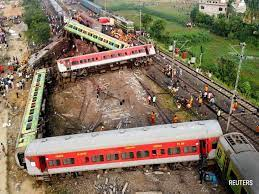

A devastating crash involving three trains in the eastern Indian state of Odisha has killed 275 people and left more than 1,000 injured, many of them seriously.
The cause of the crash, which is being described as India's worst this century, is not yet clear.
How many trains were involved?
The crash took place around 18:55 (13:25 GMT) on Friday near the Bahanaga Bazar station, about 270km (170 miles) south of Kolkata.
The trains involved:
Coromandel Express, which was a few hours into its journey from Shalimar railway station in the state of West Bengal to the southern city of Chennai
Howrah Superfast Express, which had set off from Yesvantpur station in Bengaluru and heading towards Howrah
A stationary goods train, which was standing at the Bahanaga Bazar station
A fourth stationary goods train on an adjacent line and may have suffered minor damage.
What happened?
There are four tracks at the Bahanaga Bazar station.
A railway ministry official told the BBC that lines 1 and 4 had goods trains parked on them.
The passenger trains had been travelling in different directions on tracks two and three.
Full details of how the deadly crash happened are still not available, but for some reason, the Coromandel Express travelling at 128km/h (79.5mph) left its line and entered a loop line, smashing into the back of a stationary goods train.
The goods train was loaded with iron ore, which authorities says meant the passenger train took the entire impact on collision.